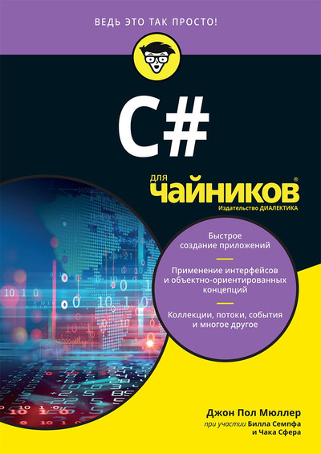

Проект "КНИГА ЗА КНИГУ"
Главная Контакты Данное руководство, ставшее бестселлером, позволяет получить точные ответы практически на любые вопросы по C# 5.0 и .NET CLR. Уникально организованное по концепциям и сценариям использования, обновленное 5-е издание книги предлагает реорганизованные разделы, посвященные параллелизму, многопоточности и параллельному программированию, а также включает подробные материалы по новому средству C# 5.0 – асинхронным функциям. Проверенная более чем 20 экспертами, в числе которых Эрик Липперт, Стивен Тауб, Крис Барроуз и Джон Скит, эта книга содержит все, что необходимо для освоения C# 5.0. Она широко известна как исчерпывающий справочник по языку. Изучите основы языка C#, включая синтаксис, типы и переменные Исследуйте более сложные темы, такие как небезопасный код и вариантность типов Научитесь пользоваться языком LINQ благодаря трем посвященным ему главам Освойте контракты кода, динамическое программирование и параллельное программирование Научитесь работать со средствами .NET, в том числе с рефлексией, сборками, управлением памятью, безопасностью, вводом-выводом, XML, коллекциями, взаимодействием с сетью и собственной поддержкой взаимодействия.
Наш адрес:123456, г. Санкт-Петербургтел. 0 (123) 456-789
©2017 Книга за книгу